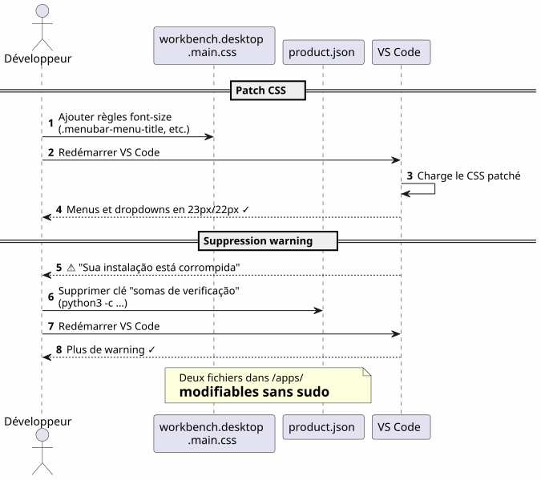

VS Code no Home: instalação local e customização das fontes sem sudo
Publié le 17 April 2026
Por que instalar o VS Code em`/opt`ou via`apt`quando a gente pode colocá-lo no seu home e transformar seu IDE num terreno de jogo sem digitar nunca`sudo`? Esta é a história de uma instalação local seguida de uma luta feroz para aumentar as fontes do menu e do explorador de arquivos.
- toc
-
[]
Visão geral do percurso
Failed to generate image: PlantUML preprocessing failed: [From <input> (line 10) ]
@startuml
skinparam backgroundColor #FEFEFE
skinparam componentStyle rectangle
actor Développeur as dev
actor "opencode\n+ LLM" as agent
package "Home Usuário (~)" #LightGreen {
package "~/apps/" {
component "VS Code
^^^^^
Syntax Error? (Assumed diagram type: component)
@startuml
skinparam backgroundColor #FEFEFE
skinparam componentStyle rectangle
actor Développeur as dev
actor "opencode\n+ LLM" as agent
package "Home Usuário (~)" #LightGreen {
package "~/apps/" {
component "VS Code
(tarball)" as vscode #SkyBlue
component "vscode-update.sh" as script #LightYellow
}
package "~/.config/Code/" {
component "settings.json" as settings #Lavender
}
package "~/.vscode-custom-css/" {
component "custom.css
(zoom: 1.25)" as customcss #Lavender
}
}
cloud "code.visualstudio.com" as download
dev --> vscode : Télécharge & installe
dev --> script : Lance mise à jour
script --> download : wget dernière version
script --> vscode : Remplace + re-patch CSS
agent --> settings : Écrit config
agent --> customcss : Écrit zoom CSS
agent --> vscode : Patch workbench CSS
note right of vscode
Installation dans le home
= contrôle total sans sudo
end note
@enduml
O Porquê : VS Code no Home
O problema com a instalação do sistema
VS Code instalado via`apt`, dnf`ou em/opt`bloqueia os arquivos do aplicativo atrás dos privilégios de root. Qualquer modificação do CSS nativo, de`product.json`ou o diretório de instalação requer`sudo`.
Or, quando se usaopencode(ferramenta CLI para pilotar um LLM no seu código), o agente precisa poder :
-
Escrever nos ficheiros de configuração`~/.config/Code/User/settings.json`) — isso, já está no home
-
Modificar os assets do IDE (CSS do workbench,
product.json) para as customizações avançadas — isso, está bloqueado sem sudo
A solução: uma instalação local
Baixa o arquivo tarball oficial e o descompacta diretamente em`~/apps/`:
mkdir -p ~/apps
cd ~/apps
wget "https://code.visualstudio.com/sha/download?build=stable&os=linux-x64" -O vscode.tar.gz
tar -xzf vscode.tar.gz
rm vscode.tar.gzO binário então se encontra em`~/apps/VSCode-linux-x64/bin/code`. Nenhum`sudo`não é necessário para ler, modificar ou substituir qualquer arquivo sob`~/apps/VSCode-linux-x64/`.
Vantagens concretas
| Vantagem | Detalhe |
|---|---|
Sem sudo |
Todos os arquivos do IDE pertencem ao usuário |
Modificação direta do CSS |
Podemos aplicar patches`workbench.desktop.main.css`sem elevação de privilégios |
Script de atualização caseira |
Um simples script de shell baixa, substitui e repatch automaticamente |
Isolação |
A instalação do sistema não está poluída; rollback = excluir a pasta |
Customizar a fonte do menu principal
A constatação
A fonte padrão do menu principal (File, Edit, View…) e dos menus suspensos é muito pequena. O VS Code não oferece nenhum parâmetro para modificá-la.
A técnica: patch CSS direto
Adicionamos CSS ao final do arquivo`workbench.desktop.main.css`:

CSS_FILE="$HOME/apps/VSCode-linux-x64/resources/app/out/vs/workbench/workbench.desktop.main.css"
cat >> "$CSS_FILE" << 'EOF'
.menubar-menu-title{font-size:23px!important}
.menubar>.menubar-menu-button{font-size:23px!important}
.monaco-menu-option{font-size:22px!important;line-height:34px!important}
.monaco-menu .action-label:not(.codicon){font-size:22px!important}
.menubar-menu-items-holder .monaco-menu .action-item .action-label{font-size:22px!important}
EOFRemover o aviso de integridade
VS Code detecta as modificações de seus arquivos e exibe um banner \"Your installation is corrupt\". Remove-se os checksums de`product.json` :
import json
product_json = "$HOME/apps/VSCode-linux-x64/resources/app/product.json"
with open(product_json, 'r') as f:
data = json.load(f)
data.pop('checksums', None)
with open(product_json, 'w') as f:
json.dump(data, f, indent=2)Após reinicialização, não há mais avisos e os menus finalmente são legíveis.
Personalizar a fonte do painel Explorer — a luta
Tentativa 1: um parâmetro que não existe
Primeiro tenta o parâmetro nativo`workbench.tree.fontSize`em`settings.json`:
{
"workbench.tree.fontSize": 20
}Resultado:nenhum efeito. Este parâmetro não existe no VS Code. A prova de que os parâmetros não reconhecidos são ignorados silenciosamente.
Tentativa 2: a extensão Custom CSS and JS Loader
Instala-se a extensão`be5invis.vscode-custom-css`:
~/apps/VSCode-linux-x64/bin/code --install-extension be5invis.vscode-custom-cssCria-se um arquivo CSS em`~/.vscode-custom-css/custom.css`com seletores que visam os elementos do explorador :
.monaco-tree-rows .monaco-tree-row,
.sidebar .monaco-list-row,
.explorer-viewlet .monaco-list-row,
.monaco-list-row .monaco-icon-label {
font-size: 22px !important;
line-height: 36px !important;
}E referenciamos este arquivo nas configurações:
{
"vscode_custom_css.imports": [
"file:///home/user/.vscode-custom-css/custom.css"
]
}Resultado :as alterações não se aplicam.
A armadilha: é preciso ativar a extensão a cada vez
A documentação da extensão é discreta sobre este ponto crucial: após cada modificação do CSS personalizado, é necessárioimperativamenteexecutar o comando a partir da paleta :
-
Ctrl+Shift+P→ digitarAtivar CSS e JS personalizados -
VS Code pede uma reinicialização → aceitar
Sem esta etapa, o CSS nunca é injetado na IDE.
Tentativa 3: as linhas se sobrepõem
Mesmo com`font-size: 22px` et line-height: 36px, as letras com haste (g, p, f, b) transbordam para as linhas vizinhas. Tentamos acrescentar
</think>
, as letras com haste (g, p, f, b) transbordam para as linhas vizinhas. Tentamos acrescentar`height` et min-height:
.monaco-list-row {
height: 36px !important;
min-height: 36px !important;
}Resultado :nenhuma mudança. VS Code calcula as alturas das linhas em JavaScript e sobrescreve os valores CSS
A solução: zoom no contêiner pai
Failed to generate image: PlantUML preprocessing failed: [From <input> (line 5) ]
@startuml
skinparam backgroundColor #FEFEFE
rectangle "Tentativa 1
Parâmetro inexistente" #LightCoral {
^^^^^
Syntax Error? (Assumed diagram type: activity)
@startuml
skinparam backgroundColor #FEFEFE
rectangle "Tentativa 1
Parâmetro inexistente" #LightCoral {
card "workbench.tree.fontSize" as t1 {
[VS Code ignore le paramètre]
}
}
rectangle "Tentativa 2
Custom CSS + font-size" #LightYellow {
card ".monaco-list-row { font-size: 22px }" as t2 {
[Texte plus grand\nmais lignes superposées]
}
}
rectangle "Tentativa 3\nfont-size + line-height + height" #LightYellow {
card "height: 36px !important" as t3 {
[VS Code override\npar JavaScript]
[Aucun effet]
}
}
rectangle "Solution\nzoom sur conteneur parent" #LightGreen {
card ".monaco-list-rows { zoom: 1.25 }" as t4 {
[Texte + espacement\nproportionnels]
[Layout JS respecté]
[✓ Résultat conforme]
}
}
t1 -down-> t2 : Pas de paramètre ?\nOn essaie le CSS
t2 -down-> t3 : Lignes superposées ?\nOn force la hauteur
t3 -down-> t4 : Override JS ?\nOn utilise zoom
@enduml
Em vez de lutar contra o layout JavaScript, usa-se a propriedade`zoom`sobre o contêiner das linhas :
.explorer-viewlet .monaco-list-rows,
.sidebar .monaco-list-rows {
zoom: 1.25;
}`zoom`Aumenta uniformemente a renderização do contêiner — texto e espaçamento — sem quebrar o layout calculado pelo motor JavaScript do VS Code. O fator 1.25 corresponde aproximadamente a um aumento de 13 px para 16 px.
Resultado :os nomes de arquivos são finalmente legíveis, as linhas corretamente espaçadas.
Resumo dos seletores e do que funciona
| abordagem | CSS | Resultado |
|---|---|---|
|
|
Texto maior mas linhas sobrepostas |
|
|
Nenhum efeito (override JS) |
|
|
Sucesso — texto + espaçamento proporcional |
O script de atualização automática
Failed to generate image: PlantUML preprocessing failed: [From <input> (line 5) ]
@startuml
skinparam backgroundColor #FEFEFE
autonumber
actor "Desenvolvedor
^^^^^
Syntax Error? (Assumed diagram type: sequence)
@startuml
skinparam backgroundColor #FEFEFE
autonumber
actor "Desenvolvedor
ou cron" as dev
participant "vscode-update.sh" as script
participant "vscode tarball
(code.visualstudio.com)" as remote
participant "~/apps/\nVSCode-linux-x64/" as local
participant "~/apps/\nvscode-backup" as backup
participant "workbench\n.desktop.main.css" as css
participant "product.json" as product
dev -> script : ./vscode-update.sh
script -> local : Lire version courante
script -> remote : wget dernière version
script -> script : Comparer versions
alt Version identique
script --> dev : "Já está atualizado!"
else Nouvelle version
script -> backup : Sauvegarder installation courante\n(horodatée)
script -> local : rm -rf ancienne installation
script -> local : mv nouvelle installation
script -> css : Ajouter patch CSS\n(menubar 23px, dropdown 22px)
script -> product : Supprimer checksums\n(python3)
script --> dev : "Atualização concluída
1.xx.yy → 1.zz.ww"
end note
@enduml
O problema
Quando o VS Code se atualiza, ele substitui a pasta de instalação eApaga todos os patches de CSS. É preciso reaplicar as modificações manualmente a cada vez.
O script `vscode-update.sh
Criamos`~/apps/vscode-update.sh`:
#!/bin/bash
set -e
VSCODE_DIR="$HOME/apps/VSCode-linux-x64"
BACKUP_DIR="$HOME/apps/vscode-backup"
TEMP_DIR="/tmp/vscode-update"
MENUBAR_FONT_SIZE="23px"
DROPDOWN_FONT_SIZE="22px"
echo "=== VS Code Local Updater ==="
CURRENT_VERSION=$("$VSCODE_DIR/bin/code" --version 2>/dev/null | head -1)
echo "Current version: $CURRENT_VERSION"
echo "Downloading latest VS Code..."
mkdir -p "$TEMP_DIR"
wget -q "https://code.visualstudio.com/sha/download?build=stable&os=linux-x64" \
-O "$TEMP_DIR/vscode.tar.gz"
echo "Extracting..."
mkdir -p "$TEMP_DIR/extracted"
tar -xzf "$TEMP_DIR/vscode.tar.gz" -C "$TEMP_DIR/extracted"
NEW_VERSION=$("$TEMP_DIR/extracted/VSCode-linux-x64/bin/code" \
--version 2>/dev/null | head -1)
echo "New version: $NEW_VERSION"
if [ "$CURRENT_VERSION" = "$NEW_VERSION" ]; then
echo "Already up to date!"
rm -rf "$TEMP_DIR"
exit 0
fi
echo "Backing up current installation..."
mkdir -p "$BACKUP_DIR"
cp -r "$VSCODE_DIR" "$BACKUP_DIR/VSCode-linux-x64-$(date +%Y%m%d-%H%M%S)"
echo "Updating..."
rm -rf "$VSCODE_DIR"
mv "$TEMP_DIR/extracted/VSCode-linux-x64" "$VSCODE_DIR"
rm -rf "$TEMP_DIR"
CSS_FILE="$VSCODE_DIR/resources/app/out/vs/workbench/workbench.desktop.main.css"
echo "Re-applying custom CSS patch \
(menubar=${MENUBAR_FONT_SIZE}, dropdown=${DROPDOWN_FONT_SIZE})..."
cat >> "$CSS_FILE" << CSSEOF
.menubar-menu-title{font-size:${MENUBAR_FONT_SIZE}!important}\
.menubar>.menubar-menu-button{font-size:${MENUBAR_FONT_SIZE}!important}\
.monaco-menu-option{font-size:${DROPDOWN_FONT_SIZE}!important;\
line-height:34px!important}\
.monaco-menu .action-label:not(.codicon)\
{font-size:${DROPDOWN_FONT_SIZE}!important}\
.menubar-menu-items-holder .monaco-menu .action-item .action-label\
{font-size:${DROPDOWN_FONT_SIZE}!important}
CSSEOF
PRODUCT_JSON="$VSCODE_DIR/resources/app/product.json"
if [ -f "$PRODUCT_JSON" ]; then
echo "Removing checksums to prevent integrity warning..."
python3 -c "
import json
with open('$PRODUCT_JSON','r') as f: data=json.load(f)
data.pop('checksums', None)
with open('$PRODUCT_JSON','w') as f: json.dump(data,f,indent=2)
print('Done.')
"
fi
echo "=== Update complete: $CURRENT_VERSION -> $NEW_VERSION ==="O script :
-
Baixa a última versão estável
-
Verifique se a versão difere da atual
-
Salva a instalação atual (timestamp) em`~/apps/vscode-backup/`
-
Substitua a pasta de instalação
-
Reaplicao patch CSS do menu principal
-
Apague os checksums de `product.json`para evitar o aviso de integridade
NOTA: As personalizações do painel Explorer via a extensão Custom CSS e o arquivo`~/.vscode-custom-css/custom.css`sobrevivem às atualizações porque vivem fora da pasta de instalação.
Arquivos envolvidos — visão geral
Failed to generate image: PlantUML preprocessing failed: [From <input> (line 6) ]
@startuml
skinparam backgroundColor #FEFEFE
skinparam componentStyle rectangle
rectangle "Instalação VS Code
(~/apps/VSCode-linux-x64/)" #LightCoral {
^^^^^
Syntax Error? (Assumed diagram type: activity)
@startuml
skinparam backgroundColor #FEFEFE
skinparam componentStyle rectangle
rectangle "Instalação VS Code
(~/apps/VSCode-linux-x64/)" #LightCoral {
component "workbench.desktop\n.main.css" as css #LightCoral
component "product.json" as product #LightCoral
component "binário
bin/code" as binary #LightCoral
}
rectangle "Configuração do utilizador
(~/.config/Code/)" #LightGreen {
component "settings.json" as settings #LightGreen
component "extensões/" as extensions #LightGreen
}
rectangle "Personalização persistente
(~/.vscode-custom-css/)" #SkyBlue {
component "custom.css
(zoom: 1.25)" as customcss #SkyBlue
}
rectangle "Automatização
(~/apps/)" #LightYellow {
component "vscode-update.sh" as script #LightYellow
component "vscode-backup/" as backup #LightYellow
}
script ..> css : Re-patch après MAJ
script ..> product : Supprime checksums\naprès MAJ
settings --> customcss : Référence via\nvscode_custom_css.imports
extensions ..> css : Custom CSS Loader\ninjecte custom.css
note bottom of css
**Ne survit pas** aux mises à jour
Re-patché par le script
end note
note bottom of customcss
**Survit** aux mises à jour
Vit hors du dossier d'installation
end note
note bottom of settings
**Survit** aux mises à jour
Vit dans ~/.config/
end note
@enduml
| Caminho | Papel | Sobrevive às atualizações ? |
|---|---|---|
|
Instalação do IDE |
Não (substituída) |
|
CSS do workbench (menu, dropdowns) |
Não (re-patchado pelo script) |
|
Somas de verificação de integridade |
Não (re-limpo pelo script) |
|
Script de atualização automática |
Sim |
|
Configurações do usuário (fontSize, CSS personalizado) |
Sim |
|
CSS personalizado para o Explorer (zoom) |
Sim |
Lições aprendidas
Failed to generate image: PlantUML preprocessing failed: [From <input> (line 7) ]
@startuml
skinparam backgroundColor #FEFEFE
skinparam defaultFontName sans-serif
skinparam ArrowColor #444444
rectangle "Instalação local
no home" as install #LightGreen {
^^^^^
Syntax Error? (Assumed diagram type: activity)
@startuml
skinparam backgroundColor #FEFEFE
skinparam defaultFontName sans-serif
skinparam ArrowColor #444444
rectangle "Instalação local
no home" as install #LightGreen {
card "Sem sudo
para modificar CSS/config" as i1
card "opencode+LLM pode\n modificar tudo" as i2
card "Rollback = restaurar\n o backup horodatado" as i3
}
rectangle "Personalização CSS
zoom vs font-size" as css #LightYellow {
card "zoom > font-size
para lista de componentes" as c1
card "Sobrescrever layout JS
altura/altura-da-linha" as c2
card "Extension Custom CSS
requer ativação
manual (Ctrl+Shift+P)" as c3
}
rectangle "Automação
script de atualização" as auto #LightCoral {
card "Reaplicar patch CSS após\n cada atualização" as a1
card "Remover checksums\n product.json" as a2
card "Backup horodatado
antes da substituição" as a3
}
install -right-> css : ensuite
css -right-> auto : enfin
note top of install
Contrôle total sans élévation
de privilèges
end note
note top of auto
Sans script, chaque MAJ
efface les patches CSS
end note
@enduml
Instalar no home libera tudo
Uma instalação local em`~/apps`dá um controle total sobre o VS Code:
-
Sem`sudo`para modificar o CSS ou a configuração
-
O agente opencode+LLM pode escrever nos arquivos de config e os ativos da IDE
-
Rollback trivial: restaurar o backup horodatado
zoom` > font-size para os componentes de lista
VS Code controla a altura das linhas via JavaScript. Modificar`font-size`sem poder tocar na altura alocada pelo motor de layout resulta em textos que transbordam. A propriedade`zoom`No contêiner pai amplia tudo proporcionalmente e contorna esse problema.
A extensão Custom CSS requer uma ativação explícita
Não é um parâmetro "set and forget". Cada modificação do arquivo CSS personalizado requer reexecutar "Enable Custom CSS and JS" a partir da paleta de comandos`Ctrl+Shift+P`).
Um script de atualização é indispensável
Sem script, cada atualização do VS Code apaga os patches CSS do workbench. O script`vscode-update.sh`Automatiza o download, a substituição, o re-patch e a limpeza dos checksums.
Referências rápidas
-
Download VS Code: https://code.visualstudio.com/Download
-
Extensão Personalizada de CSS e JS Loader :`be5invis.vscode-custom-css`
-
Problema VS Code pedindo um parâmetro nativo para a fonte do Explorerhttps://github.com/microsoft/vscode/issues/149[github.com/microsoft/vscode#149]